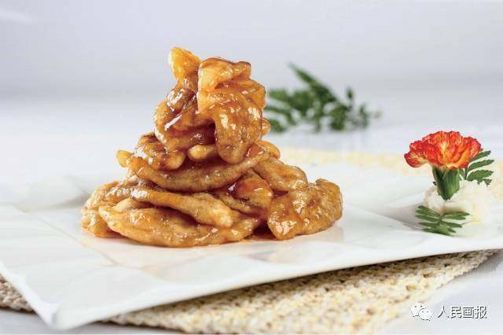
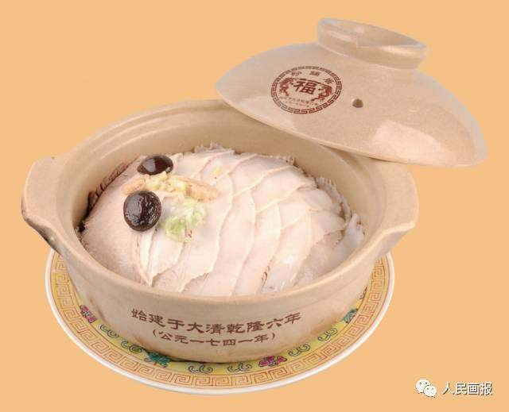
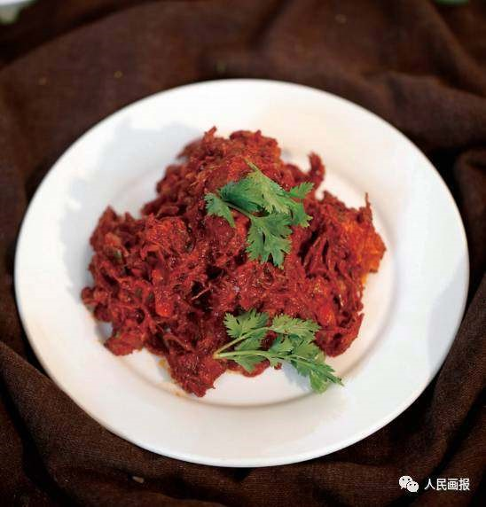
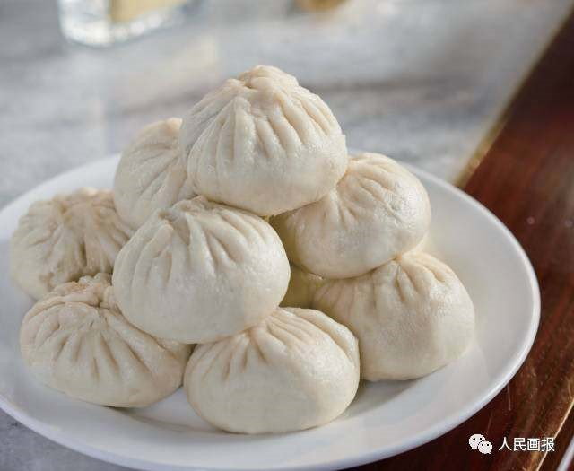
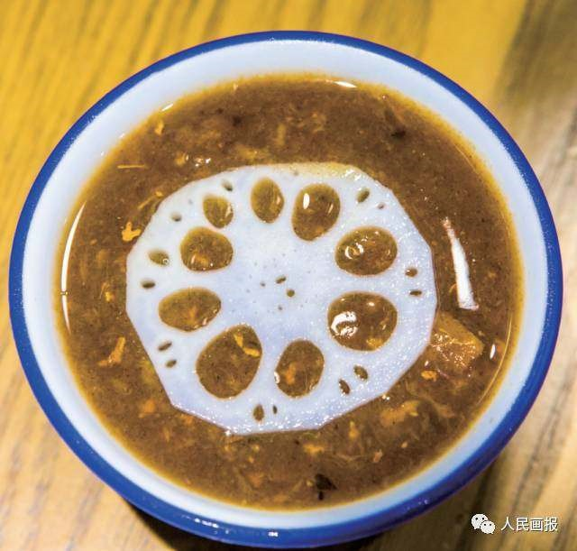
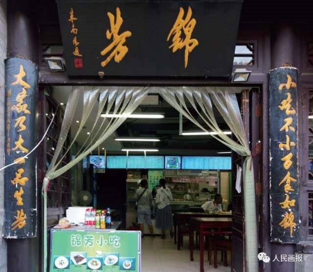

原汁原味 不能错过的北京老字号「餐饮篇」
来源：人民画报
中华美食，享誉世界；
各地佳肴，汇聚北京。
老字号餐饮不仅是京味文化的名片，也让这座城市变得有滋有味、活色生香。而老字号的每一道菜肴，都承载着历史、乡情、风俗和文化，是人们心头无尽的回味，亲切、自然而优雅。
便宜坊始创于1416 年，从一个南方人搭起的一间摊档起步，经过数十代人的传承，逐渐扬名京城，是历史悠久的老字号餐饮企业。历经 600 余年的发展，便宜坊形成了以北京填鸭为原料，以焖炉烤鸭为龙头产品，以鲁菜为基础的菜品特色。因焖炉烤鸭在烤制过程中不见明火、绿色环保，所以被现代人称为“绿色烤鸭”。目前，便宜坊焖炉烤鸭技艺已入选“国家级非物质文化遗产名录”。为丰富核心产品，便宜坊还创新研制出了“花香酥”和“蔬香酥”专利烤鸭，并根据节令，推出了 24 节气特色菜品，挖掘恢复了传统名菜清酱肉、桶子鸡等，让中国传统饮食文化深入人心。
“蔬香酥”烤鸭
清酱肉
地址： 北京市东城区鲜鱼口街65-77号

柳泉居饭庄始创于 1567 年，是北京著名的“八大居”之一。柳泉居初建时，店址在护国寺西口路东，因院内有一株大柳树和一口甜水井而得名。当时，柳泉居主要经营黄酒生意。当年北京的黄酒馆分为绍兴黄酒、北京黄酒、山东黄酒、山西黄酒四种，而柳泉居售卖的正是北京黄酒。
经过多年发展，柳泉居通过“集南北烹饪技艺之长，取京城人口味习俗之好”，创出了独具特色的京味菜，逐步发展成为一家经营北京风味菜肴的特色饭庄。柳泉居饭庄选料广泛、精于刀工、讲究造型，烹饪手法以爆、炒、熘、烧、焖为主，特色菜有蛋黄炒雪蟹、炸烹虾段、拔丝莲子、拔丝苹果等。此外，北京传统的系列豆沙包也是该店名优食品，颇受顾客青睐。
炸烹虾段
蛋黄炒雪蟹
拔丝莲子
地址： 北京市西城区新街口南大街172-178号
烤肉是具有北京特色的风味菜品，是将切好的牛、羊肉片腌渍后，置于一种特制的圆形铁盘上（又称“炙子”）烤制而成。北京人吃烤肉的历史起源于明代。《明宫史·饮食好尚》中曾记载：“凡遇雪，则暖室赏梅，吃炙羊肉。”后这一吃食流传民间。
烤肉宛始创于 1686年，以烤牛肉起家，与同样创建于清代的烤肉季合称北京烤肉之魁——“南宛北季”，“南宛”即烤肉宛。
烤肉宛以精选的牛羊肉、精湛的刀工、精美的作料闻名，再加上用专选的松枝、枣木、梨木烤炙，烤出的肉质感润滑，有鲜嫩“赛豆腐”的美誉。目前，烤肉宛北京烤肉制作技艺已被列入“国家级非物质文化遗产名录”。
除烤牛羊肉外，烤肉宛的特色菜肴还有皇室菌菇鹅肝盅、焦炒牛肉、宫保虾球、烤羊排……
烤牛肉
宫保虾球
地址： 北京市西城区南礼士路58号
1738年，都一处烧麦馆在北京前门外大街路东、鲜鱼口南开业。起初店铺只是一个芦席棚，以售卖酒和小菜为主，后于 1742 年盖起一栋带门面的小楼。1752 年，都一处因乾隆皇帝赐亲笔题写“都一处”的蝠头匾而出名，生意迅速兴旺起来。同治年间，都一处增添了数十种炒菜，更重要的是开始经营烧麦、炸三角，并与先前的马莲肉、晾肉等小菜一样名噪京城。从此，都一处正式进入老北京名馆子的行列。目前，都一处烧麦制作技艺已被列入“国家级非物质文化遗产名录”。
地址： 北京市前门大街38号
听鹂馆始创于 1750 年，位于北京颐和园内，是园内 13 处主要建筑之一，因以黄鹂鸟的叫声比喻戏曲的优美动听而得名。
听鹂馆为正宗宫廷风味饭庄，以颐和园“寿膳房”膳单和宫廷档案资料为基础，不断研究和创新，形成了色、香、味、形、意俱佳并适合现代人口味的宫廷菜肴。厨师们以精湛的烹饪技艺，创造出既不失古代风格又符合当代营养科学的菜点，每个品种均选料严格，制作精细，色彩艳丽，形象逼真，醇鲜可口，软嫩清淡。经典的宫廷菜肴有宫门奉鱼、红娘自配、生片鱼锅、寿星人参鱼糕、罗汉菜心等。
宫门奉鱼
寿星人参鱼糕
地址： 北京市海淀区新建宫门路19号（颐和园内）
庆云楼是北京较早的高档鲁菜酒楼，始创于 1820 年，坐落于烟袋斜街内。庆云楼一度名噪京华，成为达官显贵、文人雅士聚会之所。
2009 年，庆云楼在原址上进行重建，恢复了旧貌。如今的庆云楼还保留着一间 190 年前的老瓦房。重新开张的庆云楼根据历史资料复原了几十道传统名菜，如三不沾、醋椒鱼、葱烧海参、糟熘鱼片、香酥鸡、九转大肠、芙蓉鸡片、糖醋黄河大鲤鱼等。
香酥鸡
糟熘鱼片
地址： 北京市西城区前海东沿22号

烤肉季始创于 1848 年，坐落在风景如画的什刹海边，“地安门外赏荷时，树里红莲映碧池。好似天香楼上座，酒醉人阑语丝丝”即是对烤肉季的真实写照。
烤肉季主营北京烤肉和清真炒菜，其中最著名的要数烤羊肉。烤肉季的烤羊肉精选原料，经过加味腌煨，并在特制的炙子上进行烤制，烤熟的羊肉含浆滑美，不腥不膻，常常使人食一二斤仍不尽兴。目前，烤肉季北京烤肉制作技艺已被列入“国家级非物质文化遗产名录”。此外，烤肉季的清真炒菜也独具特色，芫爆散丹、鸡米海参、炸烹虾、它似蜜等上百种色、香、味俱全的清真名菜，备受顾客青睐。
烤羊肉
它似蜜
地址：北京市西城区前海东沿14号

鸿宾楼饭庄始创于 1853 年，原址在天津旭街，是久负盛名的清真风味饭庄。饭庄于 1955 年搬迁至北京，以独特的菜品享誉京城。鸿宾楼的全羊席制作技艺已被列入“国家级非物质文化遗产名录”。
在中国饮食文化中，能成为“全席”或“全宴”的都具有较深的文化底蕴。通常，取材与菜式丰富、烹饪技术多样、口味极佳的系列菜肴才能称“宴”或“席”。
当今鸿宾楼全羊席在保留传统技艺的基础上又根据现代人的饮食习惯加以改良，在用料、制作手法等方面更加细致考究，在清真菜品中独树一帜。除全羊席外，鸿宾楼的特色菜还有红烧牛尾、芫爆散丹、红烧蹄筋、鞭打绣球、葡萄蹄筋等。
鸿宾楼全羊席
地址：北京市西城区展览馆路11号
1858年，惠丰堂于北京前门外大栅栏观音寺街一座四合院内开业。“惠丰”取“惠济宾朋，丰己足人”之意。过去饭庄取名很有讲究，能称为“堂”的，一般是规模较大的店铺。进入 21 世纪，惠丰堂已成为京城百姓“寻八大堂历史，品老北京美食”的“独一处”。惠丰堂的特色烩菜、熘菜成名于百年前，得益于独到的烹调方法以及百年来的精心保护，传承至今依然味道不变，品质不衰。葱烧海参、九转大肠、干炸丸子、烧烩爪尖、烩乌鱼蛋汤等特色菜肴都展现了正宗的鲁菜技艺。
九转大肠
地址： 北京市海淀区复兴路33号
全聚德始创于 1864 年，百年不息的炉火传承着宫廷挂炉烤鸭的技艺，也记录着几代人的艰辛与成果。
百余年来，全聚德菜品不断创新发展，先后有上百个国家和地区的元首、政要光临这里品尝北京烤鸭，全聚德也成为传播中华民族饮食文化，促进中外友谊、交流与合作的纽带和桥梁。全聚德不仅以烤鸭享誉海内外，还打造出全鸭席、特色菜、创新菜、名人宴等系列精品菜肴，形成了全聚德“海纳百川”的菜品文化。目前，全聚德挂炉烤鸭制作技艺已被列入“国家级非物质文化遗产名录”。在全聚德厨师的手中，鸭子全身都是宝贝。全聚德烤鸭以北京填鸭为原料。历代厨师们在制作挂炉烤鸭的同时，还利用鸭膀、鸭掌、鸭心、鸭肝、鸭胗等，精心创制了各种美味的冷热菜肴。经过多年的积累而创制的以芥末鸭掌、盐水鸭肝、火燎鸭心、烩鸭四宝、芙蓉梅花鸭舌、雀巢鸭宝等为代表的“全聚德全鸭席”已名扬海内外。
雀巢鸭宝
盛世牡丹烤鸭
地址：北京市西城区前门西河沿街217号
曲园酒楼始创于 1890 年，是北京经营湘菜的老字号。1955 年，中华人民共和国十大元帅授衔仪式后，曾在曲园酒楼设办十五桌庆宴。毛泽东主席在品尝曲园酒楼的菜肴后，夸赞是“地道的家乡风味”。自此，曲园酒楼赢得了“京城湘菜第一家”的口碑。
曲园酒楼的湘菜由湘江流域、洞庭湖区和湘西山区三种地方菜组成，以长沙菜为代表，其菜系特点是常用熏腊原料，烧、蒸、煎、炒等烹饪手段并用，讲究入味，具有酸辣、鲜香、软嫩等特色，在京城独树一帜。著名的传统品种有腊味合蒸、左宗棠鸡、子龙脱袍、奶汤蹄筋、发丝百叶、汤泡肚尖、家乡烧鳜鱼等，多年来一直深受人们的欢迎。
地址：北京市西城区展览馆路48号
东来顺始创于 1903 年。经过几代厨师博采众家之长，苦心钻研羊肉菜品的制作技艺，东来顺在爆、烤、涮的基础上逐渐总结出一套具有独家风味的熘、炸、扒、炒等烹调技法，经营的菜品日益精美。
百余年来，历经风风雨雨，东来顺从一个粥摊发展成为京城知名的清真饭庄，走出了一条勤勉经营、苦心钻研、服务大众的奋斗之路。如今，东来顺是清真餐饮文化的代表，以“一菜成席”而驰名中外的东来顺涮羊肉，更是将美食、美味、美器浑然合为一体。目前，东来顺涮羊肉制作技艺已被列入“国家级非物质文化遗产名录”。
东来顺涮肉：东来顺所用羊肉选自内蒙古，只选用羊的上脑、小三岔、大三岔、磨裆、黄瓜条五个部位的肉，制出的羊肉红白相间，肉质细嫩，色泽鲜艳，形状整齐，厚度均匀，薄如纸、形如帕。放到锅里，一涮即熟，久涮不老。吃起来口感绵软，不膻不腻，味道鲜美。东来顺师傅的切肉功夫也是京城一绝，切出的肉片薄厚均匀，排列整齐，形如手帕。
地址： 北京市东城区南河沿大街华龙街E座
玉华台饭庄始创于 1921 年，原址在北京王府井北口的八面槽，是经营淮扬菜的老字号之一。开业之初，因为生意好，有“流水盛时年计可达十万金”的记载。之后几次扩大规模，在西交民巷经营时，取店名为“玉华食堂”。1949 年 10 月 1 日晚，玉华台饭庄的 6 位厨师被调入北京饭店筹备“开国第一宴”。1956 年，玉华台饭庄迁至西单北大街，1997 年又迁至西城马甸裕中西里。
玉华台饭庄的淮扬菜以擅制鱼虾蟹类菜为特点，菜品选料严谨，因材施艺，突出主料，讲究汤口，精工细作，四季有别。特色菜有炝虎尾、干烧黄鱼、清炖狮子头、东坡肉等，面点品种有淮扬汤包等。
干烧黄鱼
地址：北京市西城区裕中西里23号楼
丰泽园是一家以鲁菜著称的老字号。最早的丰泽园饭庄是一个四合院，正门向着东边的煤市街口，南门是原华北剧院。自 1930 年开业始，丰泽园的名号日益响亮，以至于当年有民谣：“抓药同仁堂，酱菜六必居，穿鞋内联升，吃菜丰泽园。”丰泽园也借此机会积极扩大经营。据资料记载，丰泽园掌柜栾学堂曾在上海国际饭店、上海豫园路、河南开封当年的包公衙门对面、天津狗不理老店的旧址上开设丰泽园分店。
丰泽园饭店所经营的鲁菜，主要由济南、胶东两种风味组成。菜肴以清、鲜、香、脆、嫩为特色，尤以鲜为最，擅长爆、炒、烧、炸、扒、熘、蒸等烹调技法，葱烧海参、干炸丸子、烩乌鱼蛋等都是这里的名菜。
干炸丸子
地址：北京市西城区珠市口西大街83号
1930年，在时任北平商会会长冷家骥的首倡下，西来顺在号称“食馆一条街”的西长安街上开张。西来顺开业不久，声誉就与东来顺并驾齐驱，以致当时的北平有“东来顺及西来顺，羊肉专家谁与竞”的说法。
西来顺的清真菜以精细的清真小炒闻名，菜式华贵，且融入了西式做法，与传统的清真“东派”菜的爆、炒、涮不同，自成一派，是为“西派”。其特点是用料广泛，选料精细，烹饪细致，造型美观，融中西之长；烹调上讲究刀工，擅长炸、熘、爆、炒、烧、焖，以清淡、鲜嫩、质纯、无腥膻而著称。其名菜肴有马连良鸭子、扒牛蹄黄、荔枝虾肉、油泼羊肉、灯笼鸡等。
地址： 北京市西城区北新华街116号
又一顺是东来顺创始人丁德山于 1948 年 8 月 8 日创办的清真饭庄，属于东来顺的一个支派。“东来西去又一顺，南行北往只二家”，这是当时一位文人为又一顺题写的楹联。在北京，东来顺的涮肉是一绝，为“东派”；西来顺的清真小炒肉独树一帜，为“西派”。又一顺则是将东派菜的烧、烤、涮和西派菜的精美、华贵小炒以及各地名小吃集于一店，自成一体。
又一顺的特色菜品享誉海内外，醋熘木须、焦熘肉片、炸羊尾、它似蜜、卧虎饼等都十分具有代表性。京城叫“顺”的馆子不少，又一顺绝对担得起老舍先生“饭香菜美，三江客满意。桌洁杯净，四海人称心”的赞誉。
醋溜木须
地址： 北京市西城区黄市大街28号
仿膳饭庄位于北海公园，是于 1925 年创办的宫廷菜馆。仿膳饭庄前身是“仿膳茶庄”，专卖清茶、宫廷糕点和风味菜肴，以肉末烧饼、小窝头、豌豆黄最为有名。1956 年改为饭庄，开始经营宫廷菜肴，其中“满汉全席”驰名中外。
仿膳饭庄的菜点制作精致，色形美观，口味讲究，继承了清宫“御膳”清、鲜、酥、嫩的特点，其特色菜肴有“四抓”，即抓炒里脊、抓炒鱼片、抓炒腰花、抓炒大虾；“四酱”，即炒榛子酱、炒豌豆酱、炒黄瓜酱、炒胡萝卜酱；“四酥”，即酥鸡、酥鱼、酥肉、酥海带。此外，还有一品豆腐、栗子扒白菜等。目前，仿膳（清廷御膳）制作技艺已被列入“国家级非物质文化遗产名录”。
一品豆腐
地址： 北京市西城区文津街1号
砂锅居始创于 1741 年，最早以经营砂锅白肉起家。砂锅居的师傅们将白煮的肉因材施艺，烹制出菜式丰富的“宴席菜”，有“名震京都三百载，味压华北白肉香”的赞誉。当年，民间有歇后语“砂锅居的幌子—过午不候”，说明了砂锅菜深受欢迎的景况。如今砂锅居经过不断发展，已经成为京城老字号的代表之一。
砂锅居的砂锅菜口感软烂不腻，如蘸上调兑的佐料食用，更是浓香适口。其特色菜砂锅白肉、水晶肘、全家福、九转肥肠、浓汁鱼肚、计司烤鱼等深受顾客喜爱。
九转肥肠
地址： 北京市西城区西四南大街60号
壹条龙饭庄始创于 1785 年，是京城经营清真菜肴的老字号饭庄。饭庄创建初期只是个卖羊肉并代卖烧饼和羊肉杂面的小铺子，名叫“南恒顺羊肉馆”。1897 年，光绪皇帝微服到此用餐后，消息传开，人们纷纷称此店铺为“壹条龙”。1921 年，饭庄正式挂匾“壹条龙羊肉馆”。1956年公私合营后，正式挂匾“壹条龙饭庄”。
壹条龙饭庄以经营传统涮肉为主，兼营传统清真炒菜。因其一直延续传统的铜火锅吃法，堪称京城涮羊肉之“正宗”。
涮肉宴：壹条龙的涮肉选用的是甘肃一带的滩羊，其特点为骨架小、粉肉白腰。壹条龙都是手工切肉、分类加工，并采用独特的“冷压”工艺制作冻肉卷，去膻保嫩。壹条龙有多种涮肉蘸料，均由数十种原料调制而成。比较有名的有传统麻酱蘸料、奇妙海鲜蘸料、宫廷御锅蘸料等。吃涮肉时最好配着采用传统制法烤制的蟹壳烧饼。这种烧饼外焦里嫩，层次分明，口感香酥。
地址：北京市前门大街27号
同和居饭庄始创于 1822 年。开业之初，常以客为便，使其有“宾至如归”的感觉，便取“同怀和悦”之意，将饭庄定名为“同和居”。
同和居一开始经营宫廷风味菜，后逐步变为以经营山东风味菜为主。山东菜系分为“福山派”“胶东派”两派。同和居经营的是山东福山派菜，以烹饪河味、海鲜著称，精于熘、爆、扒、炒、烩等烹制技法，菜品有清、鲜、脆、嫩、艳等特点。同和居名菜很多，其中三不沾、葱烧海参、烩乌鱼蛋、浓汁鱼肚、赛螃蟹、三鲜锅巴、烤馒头等菜肴脍炙人口。
三鲜锅巴
葱烧海参
地址： 北京市西城区月坛南街乙71号
泰丰楼饭庄始创于 1876 年，创办人为山东海阴孙氏，原址在前门外煤市街 1 号，原是旧北京饭庄著名的“八大楼”之一。清人崇彝在其笔记《道咸以来朝野记》一书中对泰丰楼饭庄有一段这样的记载：“京师南城饭馆……至最久而不衰者，惟泰丰楼、致美斋二处。”
泰丰楼饭庄的菜肴属山东风味。饭庄供应的汤菜，有山东名汤——烩乌鱼蛋汤、芙蓉银耳汤、酸辣鸡丝汤等。此外，饭庄在继承传统技艺的基础上研制出 200 多个菜品，如鲜嫩酥软的葱烧海参、醇厚香馥的一品官燕、汤鲜味美的清蒸甲鱼等名菜，以及夏天的杏仁豆腐、水晶肘子，冬天的什锦火锅、四生鱼锅等时令菜。
水晶肘子
地址： 北京市西城区前门西大街2号
同春园始创于 1930 年，其名取“同心协力春满园”“花开茂盛，生意兴隆”之意。开业之初，同春园聚集了数名厨艺高手，成为江苏风味名店，享誉至今。
同春园以烹制河鲜类菜肴最为拿手，鱼、虾、蟹类名肴迭出。同春园擅长炖、焖、烧、蒸等烹饪技法，尤其注重调汤，以保持菜肴原有的鲜美口味。其特色菜有松鼠鳜鱼、响油鳝糊、无锡肉骨头、黄桥烧饼等。
松鼠鳜鱼
地址：北京市西城区新外大街甲14号

华天延吉餐厅始创于 1943年，是北京经营朝鲜冷面的餐馆，原址在紧邻西单的手帕胡同西口，当时名叫“新生冷面馆”。1956 年公私合营后迁至宣武门内石驸马大街，1963 年迁到西四北大街 181 号。餐厅经营的冷面深受欢迎，尤其到夏季，几乎天天爆满，顾客盈门。延吉餐厅除冷面外，还经营拌辣牛肉、明太鱼、炸牛肉面包衣、酥炸鱼等朝鲜族特色菜。
拌辣牛肉
地址：北京市西城区西四北大街181号
华天大地餐厅始创于 1945 年，是北京较早经营西式菜点的老字号，原址位于西长安街。后因经营需要迁至西四路口。
华天大地餐厅以经营俄式大菜在众多的餐馆中独树一帜。因经营菜式及装修特点与北京的莫斯科餐厅相似，又位于北京老城区内，故而人称“北京城中小老莫”。餐厅经营的俄式大菜油大味厚，讲究甜、酸、辣、咸，其特色菜有罐焖牛肉、奶油烤杂拌、火腿沙拉等，餐厅装饰风格独特，具有浓郁的俄罗斯风情。
火腿沙拉
地址： 北京市西城区西四南大街44号
峨嵋酒家始创于 1950 年，最早在西单商场附近开业，素有“京城川菜第一家”的美誉。峨嵋酒家的川菜，秉承国宝级烹饪大师、川菜泰斗伍钰盛的真传，讲究色、香、味、形，在味上以多、广、厚、醇为特色。菜品根据四川当地传统手法，结合北方人饮食习惯与口味需求而进行调整创新，形成了独特的峨眉川菜。峨嵋酒家的菜肴菜式精细，以味见长。宫保鸡丁、夫妻肺片、鸡丝凉面、樟茶鸭、峨嵋汤圆等均是其特色菜肴。
\宫保鸡丁
地址：北京市西城区北礼士路58号
马凯餐厅的前身是位于地安门外后门桥的马凯冷饮店。1953 年，13 名湖南同乡买下冷饮店，将其改建为经营湖南风味菜肴的餐馆，并定名为“马凯餐厅”。1958 年，马凯餐厅迁至地安门大街 3 号，1985 年恢复了马凯餐厅老字号，2004 年，餐厅又从鼓楼搬到长椿街经营。
马凯餐厅主营湘菜，独具特色，享誉京城，是当时京城屈指可数的几家湘菜馆之一。马凯餐厅经营的湘菜品种有 300 余种，既有毛氏红烧肉、酸辣肚尖、滋补甲鱼（清蒸）、开胃鱼头王等传统风味，又有别于其他湘味饭馆的特色佳品，如玉带鳜鱼卷、火腿柴把鸡、酸辣笔筒鱿鱼、天鹅抱蛋等。
开胃鱼头王
地址：北京市西城区宣西大街117号
力力豆花庄是两家京城老店——力力餐厅、豆花饭庄的联合体。力力餐厅的前身是 1954 年在前门大街 30 号开业的劳动食堂，是中华人民共和国成立初期北京城内仅有的三家川菜馆之一。1964 年，郭沫若来到店中就餐，并巧取“劳动”中的两个“力”为其改名为“力力餐厅”。而原来的豆花饭庄则是成立于 1985 年的北京四川豆花饭庄，是当时北京唯一以“豆花”命名并主打豆花系列菜肴的川菜馆。
2003 年，力力餐厅从前门大街 30 号迁至广渠门外大街 27 号，并与北京四川豆花饭庄合并组建“力力豆花庄”。重组后的力力豆花庄不断发展创新，推出了河水豆花等多种不同口味和吃法的豆花，吆喝排骨、将军鱼、担担面等名菜也经久不衰。

地址：北京市东城区广渠门外大街37号
老西安饭庄的前身是于 1954 年 10 月在北京新街口南大街20 号开业的西安食堂，是由陕西西安老字号老孙家、同盛祥泡馍馆及厚德福饭馆选调有经验的厨工创办起来的。1956年，西安食堂参加了公私合营，1970 年改名为“西安饭馆”，1990年扩建、装修，重新开业后，正式更名为“西安饭庄”。
老西安饭庄经营的特色菜点有羊（牛）肉泡馍、红焖窝骨筋、羊肉串、糖卷果、哨子面、油酥肉饼、糖醋瓦块鱼、爆三样、温拌腰丝、铁锅蛋等，经营的酒类也以西安名酒“西凤”和桂花稠酒为主。值得一提的是饭庄所做的羊（牛）肉泡馍，既有同盛祥的“小香为骨，花椒出头”的泡馍特色，又有老孙家的看馍定汤、按碗烹制等制作风格。

糖熘卷果
地址：北京市西城区新街口南大街20号

白魁老号又名“白魁清真馆”，原名“东长顺”，是一家于 1740 年在隆福寺街 88 号开张的羊肉馆。店主是回族人白魁，他除了卖生牛羊肉外，也卖羊杂碎等熟货。在煮制熟羊肉时，白魁渐渐有了经验，又创出了烧羊肉。此后，白魁的羊肉铺便改成了饭馆，并起字号为“东长顺”。由于他做出的烧羊肉外焦里嫩、香酥可口，深受顾客青睐，久而久之，人们便把“东长顺”直接称作“白魁”，而“东长顺”的名字反倒不为人们知晓。
白魁老号制作的烧羊肉，以其独特的风味享誉京城，与东来顺的涮羊肉、烤肉季的烤羊肉、月盛斋的酱羊肉并称为北京羊肉制品“四大家”。此外，白魁老号的红烧牛尾、芫爆散丹、扒肉条也深受顾客喜爱。
烧羊肉
地址：北京市东城区交道口南大街158号
茶汤李始创于 1858 年，创始人李同林在老北京厂甸设摊儿，专营茶汤、油茶、元宵、扒糕、凉刮条面等小吃。1886 年，茶汤李迁至天桥，名声大噪。1984 年，茶汤李第四代传人李跃在传承传统技艺的基础上，改进了茶汤工艺。如今，茶汤李的茶汤系列包含了茶汤、油茶、杏仁茶、咸味面茶、莲藕茶、菱角茶、牛骨髓油茶、奶茶等品种。茶汤稠而不腻，香甜绵细，深受老北京人的喜爱。
北京庙会期间，地坛、厂甸、龙潭湖、大观园、白云观、朝阳公园都有茶汤李设置的摊位，那熟悉的吆喝声、热气腾腾的大茶壶、专业的冲制技艺、香喷喷的茶汤，吸引着游客纷至沓来。
地址：北京市东城区和平里七区30-1号
天兴居，原名“会仙居”，是刘永奎于 1862 年在北京前门外鲜鱼口创立的。一开始，会仙居只经营酒菜，后添自制的酱肉和火烧。1900年，会仙居开始经营白水杂碎，后来改良成炒肝，名噪一时。1933 年，洪瑞和沙玉福二人合伙在会仙居斜对面开设了天兴居，专营炒肝。1956 年公私合营时，会仙居与天兴居合并为天兴居。在融和了两家的制作技艺之后，北京炒肝得到了继承和发展。
地址：北京市东城区鲜鱼口街81号
爆肚张始创于 1883年。第一代传人张泉才祖籍山东，逃荒到北京后被一对卖爆肚的夫妻收养。夫妻二人因膝下无子，便把爆肚摊交给张泉才经营。继承爆肚摊后，张泉才在几十年的经营中始终坚持宁缺毋滥的原则，加上服务热情周到，久而久之，人们便习惯性地称之为“爆肚张”。改革开放后，第三代传人张耀兴在什刹海边重新经营起了爆肚店，并正式起字号为“东兴顺爆肚张”。
现在店里经营爆肚共 9 种，除了人人皆知的爆牛百叶之外，还有爆羊肚仁、爆牛肚仁、爆羊散丹、爆羊肚领、爆食信、爆葫芦、爆蘑菇头、爆羊肚板，全部爆肚食材都是采用 24 小时内宰杀的新鲜牛羊肚。
地址：北京市西城区前海东沿17号

小肠陈始创于 1886 年，创始人陈兆恩、陈世荣父子曾沿街摆摊卖过苏造肉，后出售卤煮小肠。第三代传人陈玉田将卤煮小肠做得更加地道，加之待人和气、童叟无欺，得到了食客们的认可，其卤煮摊被称为“小肠陈”。
在传承传统技艺的同时，小肠陈不断创新，其第四代传人陈秀芳成功试制了卤煮什锦火锅、卤煮砂锅和特色下水风味炒菜等新菜品，受到了消费者普遍喜爱。“小碗卤煮白透红，肥肠肉烂卤汁浓。陈年美味家传好，记述京城几代情。”这首诗道出了小肠陈在老北京人心中的位置。
卤煮什锦火锅
地址： 北京市西城区南横东街194号
奶酪魏的创始人是魏鸿臣。相传他是从宫廷里的御厨那里学来了制作奶酪的手艺，并在学成后在前门大栅栏戏园子门口设摊售卖。1888 年，魏鸿臣在北京前门外大街门框胡同 15 号租了一家门脸，并创立了字号“麟记酪铺”，主营奶酪。1988 年，麟记酪铺正式改名为“奶酪魏”。
奶酪魏奶酪制品的最大特点是奶香与淡雅的酒香相互缭绕，细腻滑嫩的酪儿入口甘沁而醇厚，每碗酪上再嵌几粒瓜子仁、葡萄干和金糕屑，滑润入口的同时多了些咀嚼的东西。曾有诗如此形容奶酪魏的奶酪——“新鲜味美属燕都，敢与佳人赛雪肤。饮罢相如烦解渴，芳生斋颊润于酥。”
果子干
地址：北京市西城区广内大街203号
爆肚冯是山东陵县人冯立山于 1888 年在北京后门桥创立的字号，专营爆肚。第二代传人冯金河在经营中潜心钻研、精心制作，使爆肚味道更加鲜美，爆肚冯也因此成为清宫御膳房专用肚子的特供点。冯金河将爆肚冯迁至北京前门外廊房二条之后，与当时爆肉马、烫面饺马等五家组成了一个小吃店，被当时各界誉以“小六国饭店”的美称。1985 年，爆肚冯的第三代传人冯广聚恢复了爆肚冯老字号。
爆肚冯的爆肚十分注重原料的精选和佐料的配制，在烹制技艺方面进行了大胆创新，使其爆肚色、香、味俱佳，受到各界好评。
爆肚
地址：北京市西城区廊房二条56号
1900年，人称“厨子李”的李振钧、李振荣、李振富、李振宗四兄弟在通州旧城南大街开了一家名为“义和轩”的小餐馆，最初只是卖些简单的炒菜、水饺、馅饼、豆粥之类。凭着四兄弟高超的手艺，再加上薄利多销的经营策略，义和轩渐渐有了名气。当时，南大街还有家很有名的“庆安楼饭店”，据说明朝权相严嵩曾为其题匾“南楼”二字。因义和轩与南楼相邻，不少人开始将“义和轩”称作“小楼”，时间久了就叫成了今天的“小楼饭店”。
小楼饭店以其独特的伊斯兰东派菜肴为代表，成为京城最有特色的清真饭店之一。传统名菜“小楼三焦”——烧鲶鱼（焦熘鲶鱼）、焦熘肉片、焦炒饹馇，已经载入《北京清真菜谱》等文献。
金针戏鲈鱼
地址：北京市通州区南大街12号
清朝末年，一位姓丁的回民在北京卖豆汁出了名。后来，第三代传人丁德瑞在西花市路北火神庙前设了固定摊点，人称“豆汁儿丁”。1910 年成立了蒜市口小吃店，后更名为锦馨豆汁店。
锦馨豆汁制作坚持“三严”：一是严把进货关，选择颗粒饱满的绿豆；二是严格掌握发酵时间，使豆汁酸味适度；三是严格掌握开锅时间，既不能熬糊，更要保证豆汁营养不被破坏。
地址：北京市东城区天坛路87号
老门框爆肚的前身是山东人任满于 1910 年在北京大栅栏门框胡同开设的小摊儿——“任记爆肚”。任满为人憨厚老实，做生意讲究货真价实，加之一手精湛的爆肚火候把控绝活及独特的爆肚配料，渐渐受到了众多食客的青睐。1943 年，任满在门框胡同开了第一家店，牌匾书写的字号就叫“门框爆肚”。20 世纪 90 年代，时任国务委员宋健经常光顾“门框爆肚”，还亲自题字“老门框爆肚”，自此，“门框爆肚”正式更名为“老门框爆肚”。
老门框爆肚经历了四代传人，其爆肚技艺与经营理念也在传承中不断创新。第二代传人任显文研制出 13 种不同品种的爆肚，第三代传人任洪生推出了肉烧饼、炸松肉等特色小吃，第四代传人宋军把涮肉添加到了老门框爆肚的菜谱里。

地址：北京市丰台区左安门外于家坟157号
锦芳回民小吃原名“荣祥成”，是山东德州人满乐亭于 1926 年在崇文门外大街路东创建的小吃店，其主营的清真京味小吃做工精细，用料讲究，深受京城百姓的喜爱。
如今，锦芳小吃的主要产品有奶油炸糕、一品烧饼、蜜麻花、艾窝窝、开口笑等面点，面茶、丸子汤、炸豆腐汤等流食，以及元宵、月饼等系列产品。
地址：北京市东城区磁器口大都市街南1楼1层
北京清真饭馆有“老三顺”，南城南来顺饭庄始创于 1937年，以爆、烤、涮等烹饪特色闻名京城。那时，南城回民集中，其中有些人无固定职业，但有手艺。他们靠两把刀（切羊肉刀和切年糕刀）八根绳（指挑的担子，两头各一个筐，各用四根绳拴起）谋生，逐渐形成品种繁多的清真小吃。如今，南来顺饭庄经营清真风味炒菜、清真海鲜、蒜烧蹄黄、手工涮肉等，更有豆腐脑、艾窝窝、豌豆黄、爆糊等北京风味小吃上百种，享有“京城小吃第一家”的美誉。
驴打滚
地址：北京市西城区南菜园街12号
庆丰包子铺始创于 1948 年，当时叫“万兴居”，经营小吃、米饭、炒菜等，原店位于西单十字路口东南角，毗邻当时的长安大戏院。万兴居潜心学习天津、北京等地不同品种包子的制法，结合各家之长，独创了适合京城百姓口味的包子，因其包子选料严格，制作精细，口味纯正，生意十分红火。1976 年，“万兴居”改名为“庆丰包子铺”，取“庆祝丰收”之意。
地址：北京市西城区西安门大街85号

隆福寺小吃起源于隆福寺庙前的小吃市场。据《日下旧闻考》载：“隆福寺每月三、九、十日有庙会，百货骈阗，为都市之冠。”隆福寺庙会上的小吃，也因物美质高、品种齐全而誉满京城。
1956 年，北京市服务局与东城区服务公司创建了隆福寺小吃店，引进了隆福寺街及京城内外近百种清真风味小吃，既有慈禧太后喜食的豌豆黄、艾窝窝等宫廷小吃，又有京城百姓喜食的豆面糕、豆汁、焦圈、豆腐脑等，品种丰富，各具特色，深受顾客喜爱。目前，隆福寺小吃中的豆面糕、椰蓉包、蜜麻花、糖卷果、馓子麻花、蜜三刀、开口笑等品种已被评为“中华名小吃”。
地址：北京市东城区隆福寺前街1号
护国寺小吃店创建于 1956 年，是在护国寺庙会小吃的基础上，结合宫廷小吃和民间小吃制作技艺发展而来的。1956年，政府将庙会上经营茶汤、扒糕、白薯等有名气的“大户”摊商组织起来，开办了护国寺小吃店。店中有艾窝窝、豌豆黄、豆面糕、蜜麻花、豆汁、焦圈、面茶等100 多个品种的北京传统小吃。小吃质量上乘，品种繁多，吸引了大量的中外食客。食客们不仅能够尽情品尝小吃的风味特色，还能够领略老北京风情。
艾窝窝
地址：北京市西城区护国寺街93号
（内容来源：北京市商务委员会、人民画报社编辑出版的《原汁原味——北京老字号餐饮篇》画册